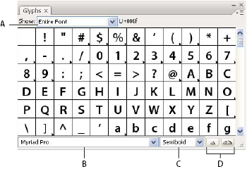
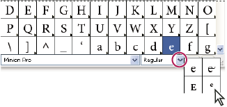

Glyphs panel overview
You use the Glyphs panel (Window > Type > Glyphs) to view the glyphs in a font and insert specific glyphs in your document.
By default, the Glyphs panel displays all the glyphs for the currently selected font. You can change the font by selecting a different font family and style at the bottom of the panel. If any characters are currently selected in your document, you can display alternate characters by selecting Alternates For Current Selection from the Show menu at the top of the panel.

- A.
- Show menu
- B.
- Font family
- C.
- Font style
- D.
- Zoom buttons
When you select an OpenType font in the Glyphs panel, you can restrict the panel to display certain kinds of glyphs by selecting a category from the Show menu. You can also display a pop‑up menu of alternate glyphs by clicking the triangle in the lower right corner of the glyph box where applicable.

For a video on working with the Glyphs panel and the Open Type panel, see www.adobe.com/go/vid0048.